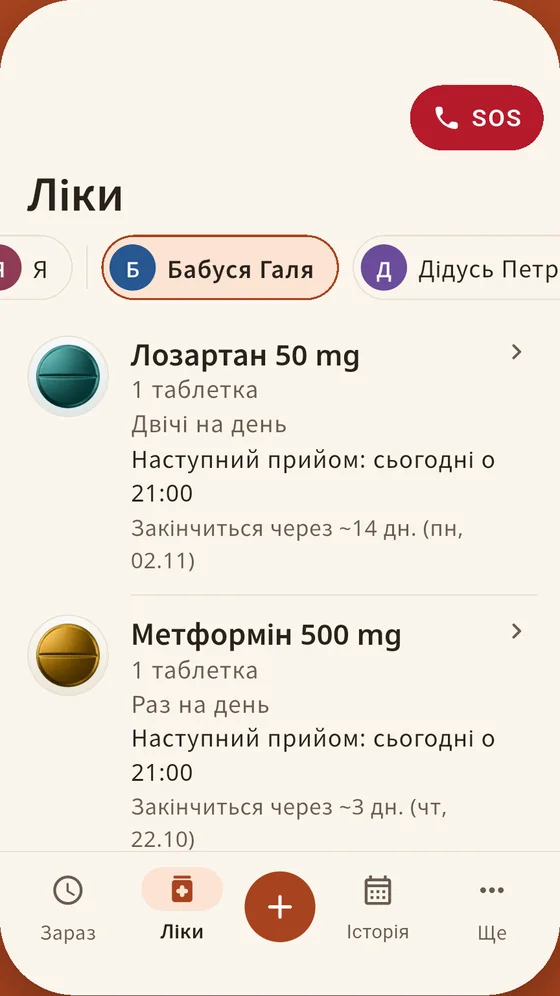
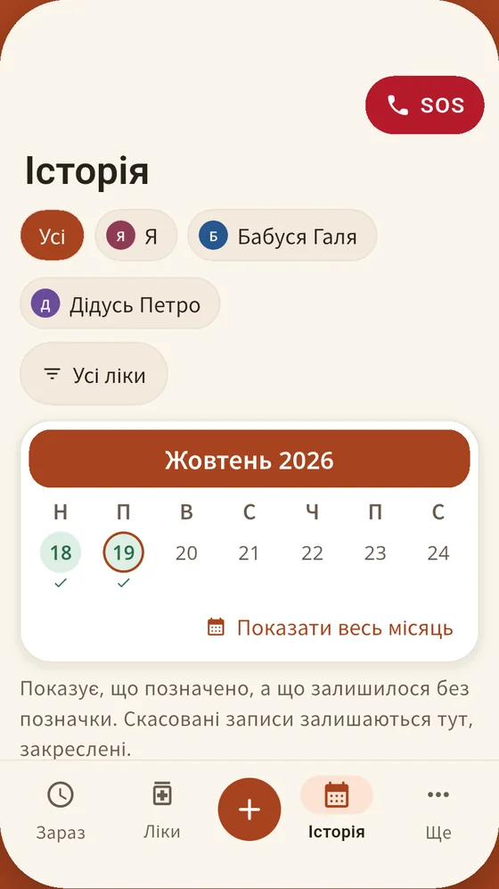
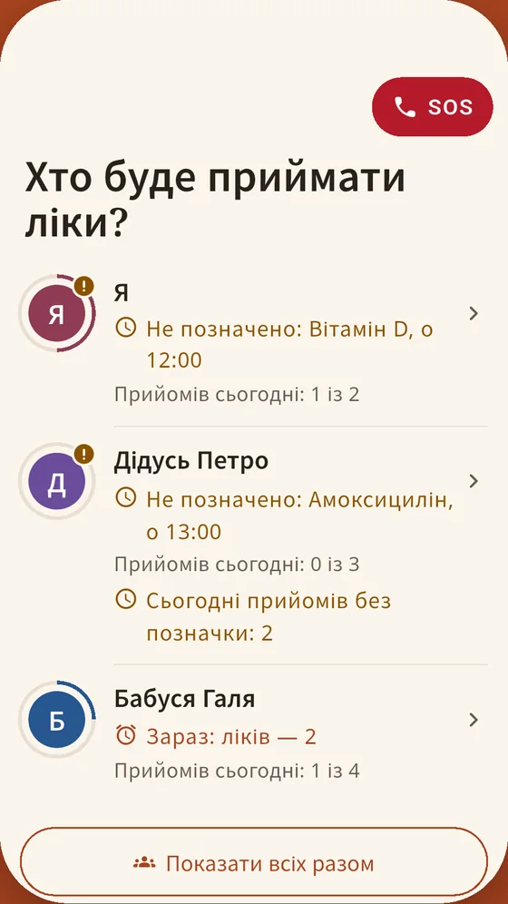
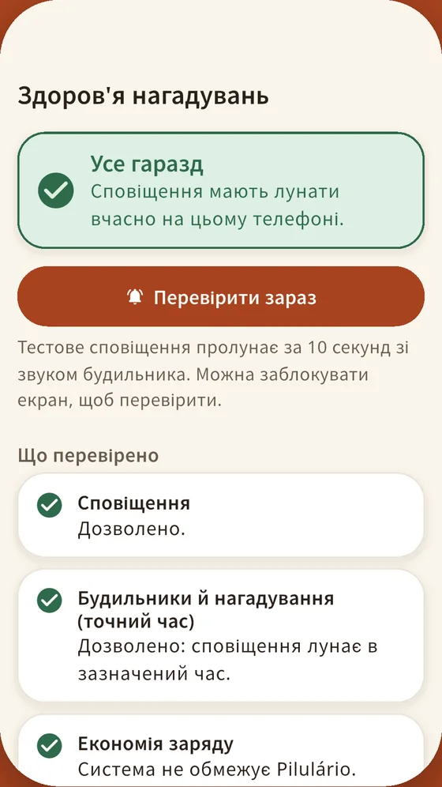
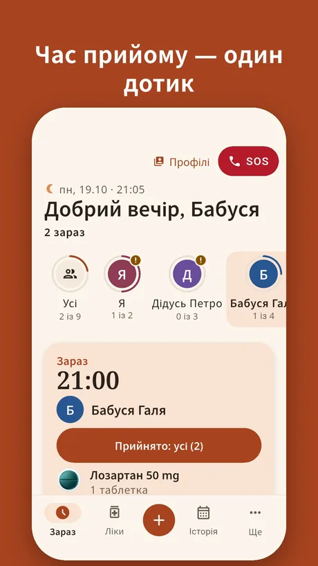
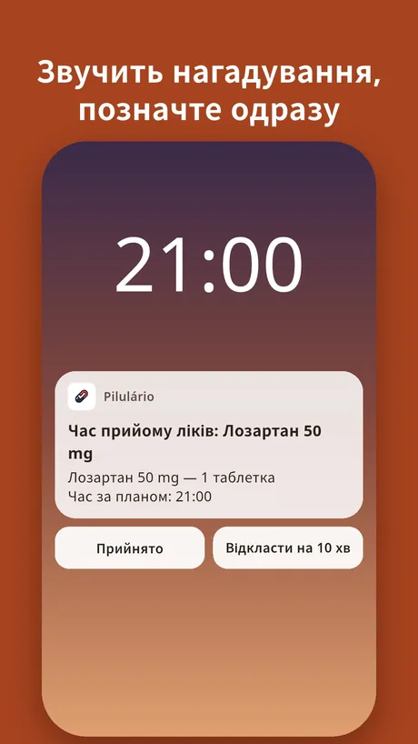
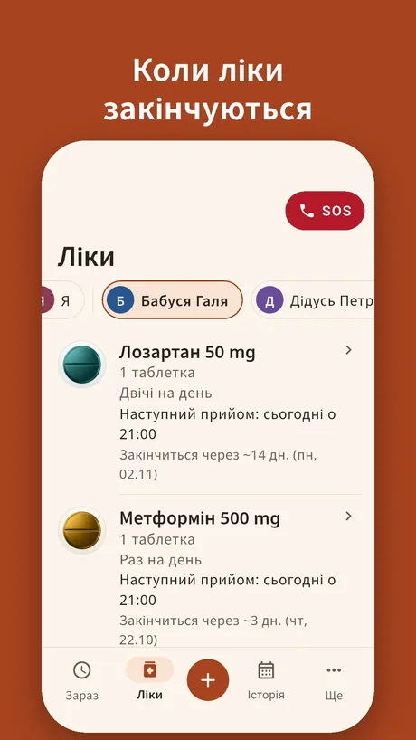
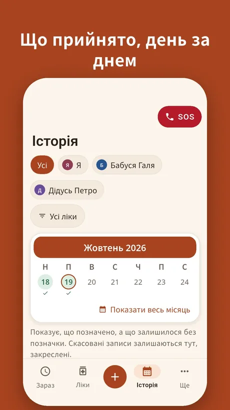
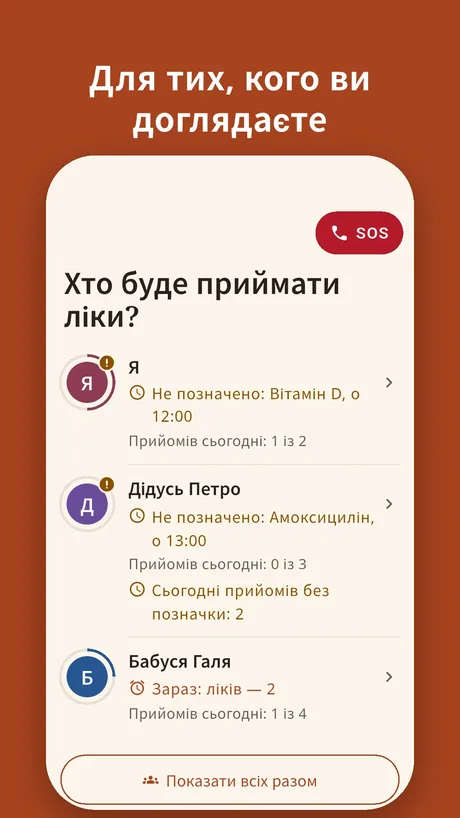
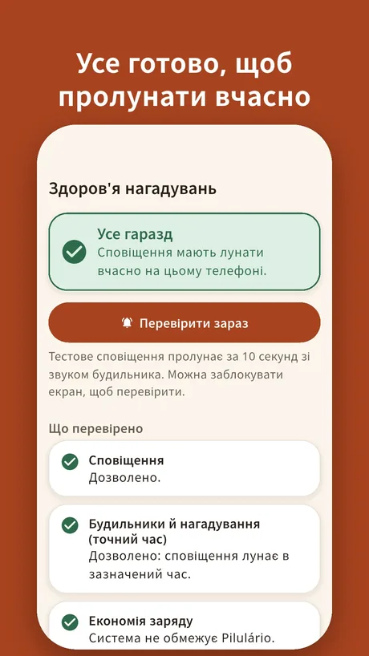

Зараз
Поточний прийом — на одному екрані.
Екран «Зараз» показує, що прийняти зараз, що лишилося непозначеним і що буде далі. Один дотик до «Прийнято» — і готово. Великий шрифт і великі кнопки, без реєстрації.
Створено для тих, хто приймає ліки щодня, і для тих, хто доглядає за кимось.
Зараз
Екран «Зараз» показує, що прийняти зараз, що лишилося непозначеним і що буде далі. Один дотик до «Прийнято» — і готово. Великий шрифт і великі кнопки, без реєстрації.
Нагадування
Нагадування приходить із кнопками «Прийнято» і «Відкласти на 10 хв». Виберіть, як нагадувати: тихо, наполегливо — повторюється, доки не позначите, — чи будильником.
Запас
Порахуйте, скільки лишилося в упаковці, і Pilulário покаже, коли вона закінчиться. «Купили ще» додає нову упаковку до залишку.

Історія
День, тиждень і місяць: що прийнято, що пропущено і ким. Помилилися? Скасуйте позначку.

Для тих, хто доглядає
У кожного свій колір і фото, свої ліки й нагадування. Нотатки, алергії та особливості догляду — на очах у того, хто дає ліки.

Передача зміни
Залишаєте когось замість себе? Передайте ліки через камеру, без інтернету, і отримайте назад звіт про те, що було дано.
Здоров’я нагадувань
Застосунок перевіряє, чи дозволяє телефон нагадуванням звучати, і показує, що налаштувати. А кнопка SOS містить номери екстреної допомоги й телефон того, хто доглядає.

Нагадування, запас, історія й SOS безкоштовні, без обмеження кількості ліків. Разова покупка «Сім’я та догляд» додає те, що полегшує життя, коли ви доглядаєте за кількома людьми.
Екрани застосунку.






Без облікового запису, без реклами й без збору даних. Pilulário не користується інтернетом: те, що ви вводите, лишається на вашому пристрої й виходить за його межі, лише коли ви ділитеся підсумком, експортуєте резервну копію або передаєте зміну на інший телефон.
Так. Будильник, запас, історія й SOS безкоштовні, без обмеження кількості ліків. Разова покупка «Сім’я та догляд» додає кількох людей, передачу зміни, нотатки й розширений режим. Без підписки й без реклами.
Так. Застосунок не користується інтернетом: нагадування, дані й передача зміни працюють, коли телефон офлайн. Через магазин проходить лише покупка.
Ні. Реєстрації немає. Щоб перенести дані на новий телефон, експортуйте резервну копію у файл.
Відкрийте «Здоров’я нагадувань»: застосунок перевіряє дозволи на сповіщення, будильники й батарею та показує, що налаштувати. Можна одразу перевірити нагадування.
Ні. Pilulário — це нагадування: воно не є медичним виробом, не пропонує ліки, дозу чи час і не замінює порад вашого лікаря або фармацевта.